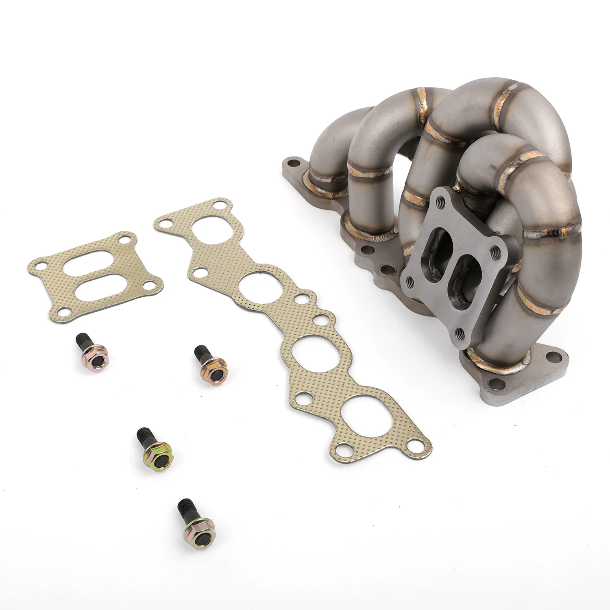

1 / 12FAPO kolektor turbosprężarka Do 3SGTE Gen3 Toyota MR2 SW20 Celica GT4 Caldina GT-T ST205
Aplikacja Turbodoładowany silnik Toyoty 3S-GTE Gen3 NIE pasuje do silnika 3S-GTE Gen1 i Gen2 Cechy Świetne ulepszenie turbodoładowanego silnika Toyota 3S-GTE Gen3 Pasuje do kołnierza Turbo Toyoty CT20B / CT26 (podwójne wejście). Doskonała jakość i trwałość poprawiająca osiągi pojazdu, zaprojektowana jako zamiennik przykręcany w celu łatwej instalacji Kolektor turbo o równej długości w stylu Ram, umożliwia szybszą sz…
Application Toyota 3S-GTE Gen3 Turbocharged Engine Will NOT fit 3S-GTE Gen1 & Gen2 Engine Features A great upgrade for your Toyota 3S-GTE Gen3 Turbocharged Engine Fits Toyota CT20B / CT26 (Twin Entry) Turbo Flange Excellent quality and durability to improve vehicle performance, engineered to be bolt-on replacement for easy installation Ram style equal length turbo manifold, allows turbo spool faster and improves throttle response Tubular manifold design with better exhaust flow and delivers more top end power Equal length runners for balanced exhaust reversion and enhanced turbo performance Flat 4-hole engine flanges, after special process shaping, more suitable for engine installation position Precision aligned tubes made of schedule 40 cast 304 stainless steel, 3 mm thick wall Head flanges laser-cut from high quality 1/2-inch thick steel plates Flange flattened by a hydraulic press for precise and leak free sealing All joints are golden color TIG brass style welded to prevent cracking and wear Flanges chrome plated for corrosion resistance Sandblasted surface for extra hardness Accessories in the photos are included 1 year warranty for any manufacturing defect No instructions provided; professional install recommended Technical Specifications Manifold Type: Tubular Turbo Manifold Runner Diameter: 1-5/8 in. (42mm) Runner Layout: Equal Length Turbo Fitment: Toyota CT20B / CT26 (Twin Entry) Head Flange Thickness: 1/2 in. (13.5mm) Pipe Thickness: Schedule 40 (3mm) Material: 304 Stainless Steel Finish: Sandblasted
2099,99 PLN
Opis produktu
Aplikacja
- Turbodoładowany silnik Toyoty 3S-GTE Gen3
- NIE pasuje do silnika 3S-GTE Gen1 i Gen2
Cechy
- Świetne ulepszenie turbodoładowanego silnika Toyota 3S-GTE Gen3
- Pasuje do kołnierza Turbo Toyoty CT20B / CT26 (podwójne wejście).
- Doskonała jakość i trwałość poprawiająca osiągi pojazdu, zaprojektowana jako zamiennik przykręcany w celu łatwej instalacji
- Kolektor turbo o równej długości w stylu Ram, umożliwia szybszą szpulę turbo i poprawia reakcję przepustnicy
- Konstrukcja kolektora rurowego zapewnia lepszy przepływ spalin i zapewnia większą moc na najwyższym poziomie
- Prowadnice o równej długości zapewniają zrównoważone cofanie wydechu i lepszą wydajność turbosprężarki
- Płaskie 4-otworowe kołnierze silnika, po specjalnym procesie kształtowania, bardziej odpowiednie dla pozycji montażowej silnika
- Precyzyjnie wyrównane rurki wykonane z odlewu stali nierdzewnej 304 harmonogramu 40, o grubości ścianki 3 mm
- Kołnierze głowicy wycinane laserowo z wysokiej jakości blach stalowych o grubości 1/2 cala
- Kołnierz spłaszczony za pomocą prasy hydraulicznej dla precyzyjnego i szczelnego uszczelnienia
- Wszystkie połączenia są spawane metodą TIG w kolorze złotym, aby zapobiec pękaniu i zużyciu
- Kołnierze chromowane, co zapewnia odporność na korozję
- Piaskowana powierzchnia dla dodatkowej twardości
- W zestawie akcesoria widoczne na zdjęciach
- 1 rok gwarancji na wszelkie wady produkcyjne
- Brak instrukcji; zalecana profesjonalna instalacja
Dane techniczne
- Typ kolektora: Rurowy kolektor Turbo
- Średnica prowadnicy: 1-5/8 cala (42mm)
- Układ prowadnicy: równa długość
- Montaż turbo: Toyota CT20B / CT26 (podwójny wpis)
- Grubość kołnierza głowicy: 1/2 cala (13,5 mm)
- Grubość rury: Harmonogram 40 (3 mm)
- Materiał: stal nierdzewna 304
- Wykończenie: piaskowane
Application
- Toyota 3S-GTE Gen3 Turbocharged Engine
- Will NOT fit 3S-GTE Gen1 & Gen2 Engine
Features
- A great upgrade for your Toyota 3S-GTE Gen3 Turbocharged Engine
- Fits Toyota CT20B / CT26 (Twin Entry) Turbo Flange
- Excellent quality and durability to improve vehicle performance, engineered to be bolt-on replacement for easy installation
- Ram style equal length turbo manifold, allows turbo spool faster and improves throttle response
- Tubular manifold design with better exhaust flow and delivers more top end power
- Equal length runners for balanced exhaust reversion and enhanced turbo performance
- Flat 4-hole engine flanges, after special process shaping, more suitable for engine installation position
- Precision aligned tubes made of schedule 40 cast 304 stainless steel, 3 mm thick wall
- Head flanges laser-cut from high quality 1/2-inch thick steel plates
- Flange flattened by a hydraulic press for precise and leak free sealing
- All joints are golden color TIG brass style welded to prevent cracking and wear
- Flanges chrome plated for corrosion resistance
- Sandblasted surface for extra hardness
- Accessories in the photos are included
- 1 year warranty for any manufacturing defect
- No instructions provided; professional install recommended
Technical Specifications
- Manifold Type: Tubular Turbo Manifold
- Runner Diameter: 1-5/8 in. (42mm)
- Runner Layout: Equal Length
- Turbo Fitment: Toyota CT20B / CT26 (Twin Entry)
- Head Flange Thickness: 1/2 in. (13.5mm)
- Pipe Thickness: Schedule 40 (3mm)
- Material: 304 Stainless Steel
- Finish: Sandblasted
FAPO Polska
Ten produkt obsługujemy lokalnie
Autoryzowana obsługa
FAPO Polska prowadzi katalog, kontakt i zamówienia bez odsyłania klienta do zewnętrznych sklepów.
Dobór po aucie
Sprawdzamy dopasowanie produktu do pojazdu, rocznika i wersji przed finalizacją zamówienia.
Wsparcie po zakupie
Masz kontakt w Polsce w sprawach zamówień, wysyłki, gwarancji i zwrotów.